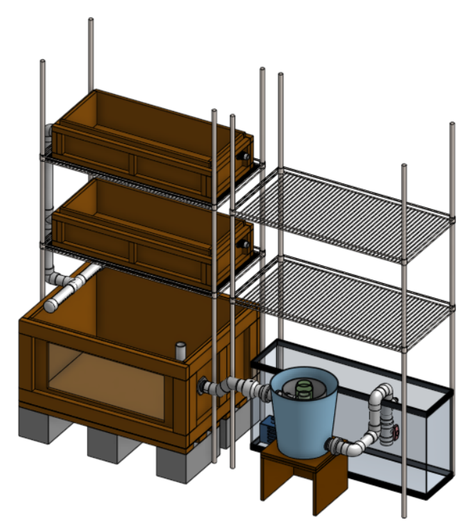

Combining Agriculture + Automation
Interested in the connections between farming and automation?
The AutoAquaponics Team’s goal is to build and maintain a fully automated aquaponic system in our club office that can grow both fish and plants unattended for one month and be monitored and controlled remotely. We are achieving this through a network of sensors, actuators, and computers that automatically regulates the light, nutrient, and water input of the system. These data will then be transferred to a server to allow for real-time access. There is also an extensive plumbing portion to our design to capture solids from the grow beds and fish tank while ensuring the efficient transport of key chemicals.
Overall, we are striving to automate as much of the farming process as we can to make growing fish and plants possible even without human presence, and we welcome anyone with an interest in automation, IoT, mechatronics design, water systems, hydroponics, or aquaculture to join the team
If you are interested, be sure to reach out to the AutoAquaponics PM, Bill Yen (billyen2023@u.northwestern.edu), for more information!
Learn more about AutoAquaponics by checking out our blog here!
Made possible with the support of: